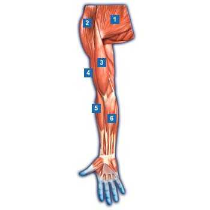
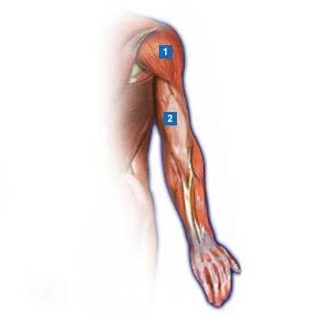
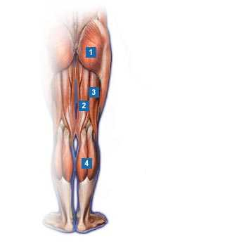
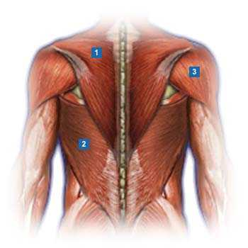
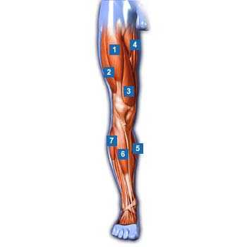
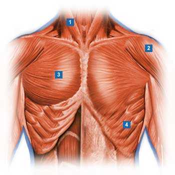
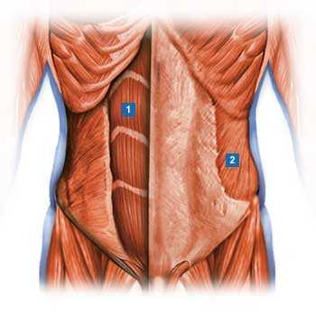
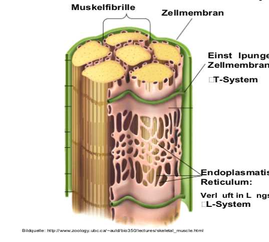
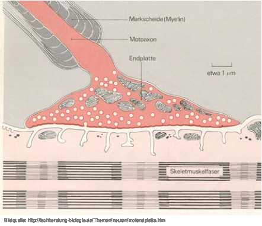
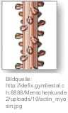

Katalogname: 06_Testall Fragenanzahl: 28 Gesamtpunkte: 28 Autor: Mag. Markus Braun (St.Pölten, Österreich) [Info wurde aus Fragenkatalog übernommen (ohne Gewähr!)]


Frage 3 von 28: Das ATP dient: damit sich die Hälse der Myosinköpfchen abwinkeln können damit sich die Myosinköpfchen am Aktin binden können damit sich die Myosinköpfchen vom Aktin lösen können

Frage 5 von 28: Wie heißt der Energieträger im Muskel?
Frage 6 von 28: Eine Nervenzelle mit allen zu ihr gehörigen Muskelzellen nennt man:

Frage 8 von 28: Die Synapse zwischen Nerven- und Muskelzelle nennt man
Frage 9 von 28: Eine der beiden Funktionen des Muskels Nr. 2 (Armhinterseite) in der Schulter?

Frage 11 von 28: Wie heißt die Sehne des Muskels Nr. 4 ?


Frage 14 von 28: Ursprung des Muskels Nr. 2 ?
Frage 15 von 28: Wieviele Köpfe hat der Muskel Nr. 1-3 ?
Frage 16 von 28: Um welche Muskeln handelt es sich bei den Muskeln Nr. 4 ? (Vorderseite des rechten Beines)

Frage 18 von 28: Was bedeutet das H bei der PECH Regel?


Frage 21 von 28: Sehnen verbinden den Muskelbauch mit den .......
Frage 22 von 28: Sehnen können sich ...... kontrahieren weder kontrahieren noch stark dehnen stark dehnen
Frage 23 von 28: Bei welchem der folgenden Muskeln liegt der Muskelbauch über dem Gelenk? Handbeuger Biceps brachii Wadenmuskel Deltamuskel Quadriceps
Frage 24 von 28: Den Gegenspieler eines Muskels nennt man ....
Frage 25 von 28: Ein Sarkomer ist ... der Überlappungsbereich von Aktin und Myosin ein Aktinfilamet ein Myosinfilament mit seinen beiden Aktinfilamenten ein Myosinfilament
Frage 26 von 28: Um was handelt es sich bei Muskelkater? mikroskopisch kleinen Verletzungen (Mikrotraumen) in den Muskelfibrillen durch eine Überbelastung erfolgte Anreicherung von Lactat (Milchsäure) Bluterguß im Muskel chemischen Ungleichgewichtes: Mg- Mangel führt zu ATP Mangel Entzündung des Muskels
Frage 27 von 28: Bei einer Muskelzerrung sollte man NICHT: Hochlagern Druckverband anlegen Kühlen Massieren
Frage 28 von 28: Mg- Mangel führt zu ATP Mangel und in Folge zu einem/einer .... Prellung Krampf Muskelkater Sehnenscheidenentzündung